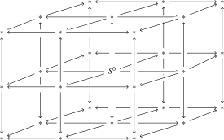

Definition 19.1.1. A stable category is a pointed right exact category such that the suspension functor \[ \Sigma\colon C\to C \] is an equivalence.
We denote by \(\StabCat\) the full subcategory of \(\RexCat\) spanned by small stable categories.
Lemma 19.1.2. Let \(S\) be the image of the map \([0]\to\Map([1],\RexCat)\) corresponding to the right exact functor \[ \Sigma\colon\rex{[1]}_\bullet\to\rex{[1]}_\bullet\, . \] Then \(S\) is a collection of morphisms between compact objects and the \(S\)-local objects in \(\RexCat_\bullet\) precisely are the small stable categories. Moreover, for any small pointed right exact category \(C\), the suspension functor \(\Sigma\colon C\to C\) is an \(S\)-equivalence.
Proof
The suspension functor \(\Sigma\colon C\to C\) is an equivalence if and only if the induced map \[ \Sigma_*\colon \Map([1],C)\to\Map([1],C) \] is an equivalence. We have: \begin{align*} \Map([1],C) &=\Fun([1],C)^\simeq\\ &=\Rex(\rex{[1]}_\bullet,C)^\simeq \end{align*} The map \(\Sigma_*\) coincides with the map defined by pre-composition with \(\Sigma\colon\rex{[1]}_\bullet\to\rex{[1]}_\bullet\) by the first part of Lemma 18.7.13. This proves the first assertion. The last one follows right away from the last part of Lemma 18.7.13.
Proposition 19.1.3. The category \(\StabCat\) is compactly generated and the full embedding \[ \StabCat\hookrightarrow\RexCat_\bullet \] commutes with filtered colimits and has a left adjoint.
Proof
Since \(\RexCat_\bullet\) is compactly generated by Corollary 18.7.6, the preceding lemma says that we can apply Proposition 18.4.1.
Remark 19.1.4. One can prove directly that (small) stable categories are stable under (small) colimits in pointed right exact categories. Indeed, by virtue of Proposition 18.7.17, if \(i\mapsto C_i\) is a diagram in \(\StabCat\) indexed by a small category \(I\), with colimit \(C\) in \(\RexCat_\bullet\), the suspension \(\Sigma\colon C\to C\) is the colimit of the suspension functors \(\Sigma\colon C_i\to C_i\), hence is an equivalence as well. One can construct the left adjoint of the embedding of \(\StabCat\) into \(\RexCat_\bullet\) explicitly as follows.
Lemma 19.1.5. The exchange isomorphism between \(\Sigma^2\) and \(\Sigma\), obtained from Proposition 18.7.17 with \(f=\Sigma^2\), is the associativity constraint \[ \Sigma\circ\Sigma^2=\Sigma^2\circ\Sigma \] (in any pointed category with finite colimits).
Proof
Let \(C\) be a pointed category with finite colimits.
Under the equivalence
\[
\FinAn_\bullet\otimes C=C
\]
we can identify \(\Sigma\colon C\to C\) with the functor \(\Sigma\otimes \id_C\).
In other words, it suffices to prove the lemma in the case where \(C=\FinAn_\bullet\).
Composing the equivalence \(\FinAn_\bullet\otimes\FinAn_\bullet=\FinAn_\bullet\)
with the canonical functor
\[
\FinAn_\bullet\times\FinAn_\bullet\to\FinAn_\bullet\otimes\FinAn_\bullet\ , \quad (x,y)\mapsto x\otimes y
\]
defines a functor
\[
\FinAn_\bullet\times\FinAn_\bullet\to\FinAn_\bullet\ , \quad (x,y)\mapsto x\wedge y
\]
that commutes with finite colimits in each variables.
The universal property of \(\FinAn_\bullet\) implies that there are functorial equivalences
\[
x\wedge S^0=x
\]
extending the identification \(S^0\wedge S^0=S^0\).
The equivalence \(S^0\wedge(S^0\wedge S^0)=(S^0\wedge S^0)\wedge S^0\)
extends uniquely to a functorial equivalence of the form
\[
\wedge (y\wedge z)=(x\wedge y)\wedge z\, .
\]
Finally, there is a unique functorial equivalence of the form
\[
\tau_{x,y}\colon x\wedge y=y\wedge x
\]
inducing the identity of \(S^0\wedge S^0\).
We observe that, for any
maps \(u\) and \(v\) in \(\FinAn_\bullet\) we have identities of the form
\begin{align*}
(u\wedge\id)\circ(\id\wedge v)
&=u\wedge v\\
&= (\id\wedge v)\circ (u\wedge\id) \, .
\end{align*}
Furthermore, we can identify
\[
\Sigma\colon\FinAn_\bullet\to\FinAn_\bullet
\]
with the functor
\[
S^1\wedge(-)\colon\FinAn_\bullet\to\FinAn_\bullet
\]
where \(S^1:=\Sigma(S^0)\). The exchange isomorphism
\[
\Sigma(\Sigma^2(x))=\Sigma^2(\Sigma(x))
\]
can be interpreted as the map
\[
\tau_{S^1,S^2}\wedge\id_x\colon S^1\wedge S^2\wedge x=S^2\wedge S^1\wedge x\, .
\]
Therefore, in order to prove this lemma, it suffices to prove that the map \(\tau_{S^1,S^2}\)
is the identity.
One can see \(S^1\) as the colimit of the diagram
\[
\ast\leftarrow S^0\to \ast
\]
(where \(\ast\) is the terminal anima).
And \(S^2\) is the colimit of the diagram bellow.
Wrting \(S^2:=S^1\wedge S^1\), the isomorphism
\[
\tau_{S^1,S^1}\colon S^1\wedge S^1\iso S^1\wedge S^1
\]
is the map induced by applying a a quarter turn (in any direction) to the commutative diagram above.
Let us consider the commutative diagram bellow.

Remark 19.1.6. Let \(C\) be a small pointed right exact category. One constructs a sequence of right exact functors \[ C_0\xrightarrow{\ f_1\ }C_1\to\cdots\to C_n\xrightarrow{\ f_{n+1}\ }C_{n+1}\to\cdots \] by \(C_n=C\) for all \(n : \N\) and \(f_{n+1}=\Sigma\) for all \(n : \N\). We define the Spanier-Whitehead stabilization of \(C\) as the Milnor colimit in \(\RexCat_\bullet\) of this sequence of functors (one can compute this Milnor colimit as an \(\omega\)-indexed colimit, hence as an \(\omega\)-indexed colimit in \(\Cat\) itself): \[ \SpW(C):=\Milcolim{n : \N} \, C_n\, . \] By construction there is a cover \[ \underset{n : \N}{\sum} \, C_n^\simeq\to \SpW(C)^\simeq\, . \] For \(x\) an object of \(C\) and \(n : \N\), we write \(\Sigma^{\infty-n}(x)\) for the image of \(x\) in \(\SpW(C)\), where \(x\) is seen as a term of \(C_n\). Given another object \(y\) of \(C\) and a natural number \(p : \N\), the general explicit description of mapping animae in filtered colimits of categories given in Remark 16.3.13 yields for \(m:=\max\{n,p\}\): \[ \underset{k : \omega_{m/}}{\colim}\, \Hom_C(\Sigma^{k-n}(x),\Sigma^{k-p}(y)) =\Hom_{\SpW(C)}(\Sigma^{\infty-n}(x),\Sigma^{\infty-p}(y))\, . \] The component \(C_0=C\) yields a canonical right exact functor \[ \Sigma^\infty\colon C\to\SpW(C)\ , \quad x\mapsto\Sigma^{\infty-0}(x)\, . \] We have a morphism of sequences of the form in which each commutative square is given by the commutativity constraint of Proposition 18.7.17 for \(f=\Sigma^2\). However, by virtue of Lemma 19.1.5, this commutativity constraint simply is the associativity constraint.
The induced functor on the Milnor colimits simply is the double suspension functor \[ \Sigma^2\colon\SpW(C)\to\SpW(C)\, . \]
Theorem 19.1.7. For any pointed right exact category \(C\), the Spanier-Whitehead stabilization \(\SpW(C)\) is a stable category.
Proof
It suffices to prove that the functor \[ \Sigma^2\colon\SpW(C)\to\SpW(C) \] is an equivalence. As explained in the previous remark, this functor is the one induced by applying the Milnor colimit construction to the morphism of sequences in which the commutativity constraints are the identities. Using the identification \(\omega_{2/}=\omega\) and the fact that the successor operation on \(\omega\) defines a terminal functor, we see immediately that \(\Sigma^2\) is an equivalence whose inverse is the diagram
Remark 19.1.8. Using the last assertion of Lemma 19.1.2, we see that, for any pointed right exact category \(C\) and any stable category \(D\), the canonical functor \[ \Sigma^\infty\colon C\to \SpW(C) \] induces an equivalence \[ \RexCat(\SpW(C),D)^\simeq\simeq\Rex(C,D)^\simeq\, . \] In particular, Theorem 19.1.7 yields another proof that the full embedding \(\StabCat\hookrightarrow\RexCat_\bullet\) has a left adjoint given on objects by the Spanier-Whitehead construction. Applying Proposition 18.3.12, we see that \(\StabCat\) is compactly generated. Overall, this yields an alternative proof of Proposition 19.1.3, arguably more explicit.